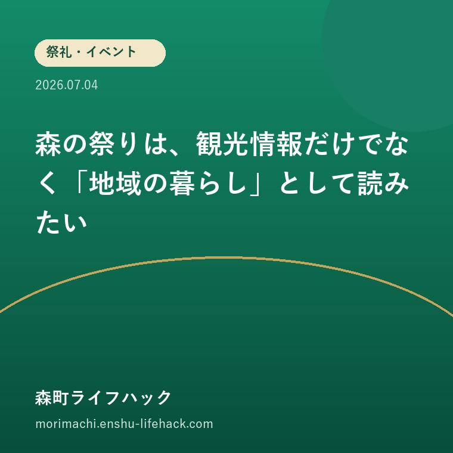

祭礼・イベント
森の祭りは、観光情報だけでなく「地域の暮らし」として読みたい

この記事の要点
Q. 森町の祭りを知ると、暮らしの何が見えてきますか？
A. 行事の日程だけでなく、地域のつながりや一年の生活リズムが見えてきます。住まい選びでも無関係ではありません。
導入——森の祭りは、観光情報だけでなく「地域の暮らし」として読みたい
森町には屋台の曳き廻しや三社に伝わる舞楽があります。見る側の楽しさと、地域が受け継ぐ時間の両方から祭りを考えます。
この記事で考えたいのは、単に『森の祭りは、観光情報だけでなく「地域の暮らし」として読みたい』という情報を知ることではありません。森町で暮らす人、これから関わる人、離れて住む家族が、何を事実として確認し、どの順番で判断すれば迷いを減らせるかという実務の話です。
最初の問いは『森町の祭りを知ると、暮らしの何が見えてきますか？』です。検索すると短い答えだけが目に入りやすいのですが、暮らしの場面では家族構成、場所、時期、手元の資料によって必要な確認が変わります。だから私は、結論だけでなく確認の道筋まで書くことにしました。
先に要点を言えば、行事の日程だけでなく、地域のつながりや一年の生活リズムが見えてきます。住まい選びでも無関係ではありません。 ただし、この一文だけを切り取って行動すると、対象条件や例外、現地の状況を見落とすことがあります。公式資料で分かること、資料だけでは分からないこと、現地や窓口で確かめることを分けて読み進めてください。
祭礼や催しは、当日の華やかさだけで成り立つものではありません。準備、練習、交通整理、清掃、片付けまで地域の時間が積み重なっています。森町の行事を楽しむ側にも、生活道路や祈りの場を借りる意識が求められます。
祭礼・イベントというテーマは、知識として読んだ瞬間より、自分の予定表や家族の役割に置き換えたときに意味を持ちます。誰が確認するのか、いつまでに動くのか、費用や移動をどう見込むのかを具体化することが、遠回りに見えて一番の近道です。

まず、公式資料から事実を整理する
町公式の移住案内は、森のまつりで十四台の屋台が曳き廻されること、小國神社・天宮神社の十二段舞楽、山名神社の天王祭舞楽などを森町の暮らしの魅力として紹介しています。
今回の基礎資料は、森町が公開している『暮らしの森町自慢／静岡県森町』です。町公式ページは、対象となる人や場所、相談先、関連資料へたどるための出発点になります。まず公式の記載を読み、その後に自分の状況と一致する部分を拾うのが安全です。
公式ページを読むときは、ページの見出しだけで判断せず、対象、期限、必要書類、費用、申請先、更新日、関連リンクを順に確認します。PDFが添付されている場合は、本文とPDFのどちらが新しいか、年度表記が一致しているかも見ます。
一方、公式資料にも書かれていないことがあります。個別の土地や建物の状態、家族間の合意、当日の混雑、地域での具体的な運用などです。記載がない部分を『問題ないはず』と推測で埋めず、質問として残すことが大切です。
この記事では、公式資料から確認できる事実と、大石の評価や提案を分けています。伝統が観光資源だけでなく地域の生活に根付いているという評価も、開催日だけを追い、準備や交通への影響を見落とさないという注意も、資料の記載そのものではありません。公表情報を暮らしへ置き換えたときの見方として読んでください。
確認日は、情報が永遠に有効であることを保証する日ではありません。窓口、金額、期限、開催状況、運行時刻、様式は変わることがあります。実際に動く日が決まったら、その日の直前にもう一度公式ページを開く必要があります。
関連する町公式ページも合わせて読むと、単独の案内では見えにくい前後関係が分かります。祭礼・イベントは一つの担当だけで完結しない場合があるため、最初の窓口で『この後に別の確認が必要か』と聞くことも有効です。
森町の暮らしに置き換える
開催日時だけでなく、由来、担い手、観覧場所、交通規制、駐車場、撮影の可否を確認すると、見る側と支える側の双方に無理のない参加ができます。
森の祭りは、観光情報だけでなく「地域の暮らし」として読みたいを自分の暮らしに置き換える第一歩は、今分かっていることと分からないことを分ける作業です。分かっている欄には資料名や日付を書き、分からない欄には質問を書きます。空欄を推測で埋めない方が、窓口や家族との話が早く進みます。
次に、町公式で行事と文化の背景を読むという確認を実際の予定へ落とします。『そのうち調べる』ではなく、誰が、どの資料を使い、いつ確認するかを決めます。終わったら確認日と回答を残し、別の家族が見ても同じ内容をたどれる状態にします。
森町は一つの町でも、地区や場所によって移動、周辺環境、地域との関わり方が異なります。町全体の説明が正しくても、自分の候補地や対象物にそのまま当てはまるとは限りません。地図、現地、公式情報を重ねて見る必要があります。
また、平常時だけでなく、雨の日、家族が不在の日、車が使えない日、連絡が取りにくい日を想定します。参加の形は地域ごとに異なるため一律に決めつけないという注意は、まさに例外の日に問題になりやすい点です。普段できることと、代替手段があることは同じではありません。
最新の開催案内、交通情報、主催者の注意事項、公共交通、雨天時の扱いを一つに保存し、過去の記事や写真だけで判断しないことが基本です。
評価——良い点と、注文したい点
良い点
- 伝統が観光資源だけでなく地域の生活に根付いている
- 子どもから大人まで地域を知る入口になる
良い点の一つ目は、伝統が観光資源だけでなく地域の生活に根付いていることです。情報の入口が明確なら、個人の記憶や口コミだけに頼らず、家族全員が同じ資料を見ながら話せます。判断が違っても、前提となる事実を共有できることには大きな意味があります。
伝統が観光資源だけでなく地域の生活に根付いているという長所は、初めて森町の情報を探す人にも役立ちます。町内の事情をよく知る人には当たり前でも、転入者や離れて住む相続人には分からないことが多くあります。入口が示されていれば、質問を具体的にできます。
二つ目は、子どもから大人まで地域を知る入口になることです。一つの選択肢だけを勧めるのではなく、関連する確認先へ進めることは、急いで結論を出したくない人にとって安心材料になります。選択肢を知ることと、すぐ申し込むことは別です。
子どもから大人まで地域を知る入口になるという点は、家族で役割を分けるときにも有効です。現地を見る人、書類を集める人、窓口へ聞く人を分けても、同じ公式資料へ戻れるからです。誰か一人の記憶に依存しない進め方ができます。
私は、良い仕組みを評価するとき、制度が存在するかだけでなく、必要な人が入口へたどり着けるかを見ます。名称が難しくても、暮らしの言葉から探せること、次の行動が分かること、問い合わせ先が明確であることが重要です。
以上から、森の祭りは、観光情報だけでなく「地域の暮らし」として読みたいについて町が公表している情報は、考え始めるための土台として評価できます。ただし、土台があることと、個別の判断が自動的に終わることは同じではありません。ここを分けて理解する必要があります。
注文したい点
- 開催日だけを追い、準備や交通への影響を見落とさない
- 参加の形は地域ごとに異なるため一律に決めつけない
注文したい点の一つ目は、開催日だけを追い、準備や交通への影響を見落とさないことです。短い案内や検索結果だけでは、対象条件や例外が省かれて見える場合があります。見出しで自分が対象だと思っても、本文、添付資料、最新のお知らせまで確認する必要があります。
開催日だけを追い、準備や交通への影響を見落とさないという誤りが起きる背景には、早く結論を知りたい気持ちがあります。しかし、急いで判断してやり直す方が時間も費用もかかります。分からない段階で相談することは、準備不足ではなく、誤りを減らすための行動です。
二つ目は、参加の形は地域ごとに異なるため一律に決めつけないことです。森町全体を説明する情報と、特定の地区、土地、世帯、開催日の状況は粒度が違います。全体の傾向を個別の答えに置き換えず、対象を特定してから確認します。
参加の形は地域ごとに異なるため一律に決めつけないという点を避けるには、現地を見る時間帯を変える、家族以外の第三者へ説明してみる、窓口への質問を文章にするなど、別の角度から確かめる方法が役立ちます。一度見て終わりにしないことが大切です。
情報が見つからない場合も、自由に判断してよいという意味ではありません。担当窓口が違う、古いページが検索に残っている、個別相談で確認する事項である可能性があります。見つからない事実と、存在しない事実を混同しないようにします。
反対に、注意点があるからといって、森町での暮らしや地域の仕組みを否定的に見る必要もありません。良い点と不便な点を同じ表に置き、自分が受け入れられる条件と、対策が必要な条件を分ければ、感情だけでない判断ができます。

対案・結論——三段階で確認する
第一段階は、町公式で行事と文化の背景を読むことです。この段階では結論を出しません。対象、資料、場所、日付を確定し、今の理解が公式情報と一致しているかを確かめます。家族内で認識が違う場合は、違いを消すのではなく並べて記録します。
町公式で行事と文化の背景を読む際には、画面のURLだけでなくページ名と確認日も残します。後でページが更新されたとき、どの情報を前提に話したのかが分かります。印刷する場合も、印刷日を余白に書いておくと混乱を減らせます。
第二段階は、訪問前に開催情報と交通案内を確認することです。公式資料で全体像をつかんだ後、現地、家族の予定、手元の書類と照合します。資料に書かれた一般的な説明と、自分の状況が違う点を質問へ変えていきます。
訪問前に開催情報と交通案内を確認するときは、一回で全部を終わらせようとしない方がよい場合があります。写真、メモ、地図、回答を持ち帰り、家族で確認してから次へ進む方が、後から『聞いていない』『認識が違う』という問題を減らせます。
第三段階は、住む予定なら地域での関わり方を無理なく尋ねることです。ここで初めて、申込み、契約、参加、移動、継続管理など次の行動を選びます。条件が揃わない場合は、何が揃えば判断できるかを明確にして保留します。
住む予定なら地域での関わり方を無理なく尋ねる際には、費用だけでなく、移動時間、家族の負担、維持に必要な時間、変更時の連絡方法も確認します。初回の手間だけでなく、続けられるかという視点を入れることで、選んだ後の後悔を減らせます。
私からの対案は、森の祭りは、観光情報だけでなく「地域の暮らし」として読みたいを一度きりの判断にしないことです。確認した内容を一枚にまとめ、半年後や次の年度にも見直せる形にします。暮らしの条件は変わるため、記録があれば変化に合わせて修正できます。
町の案内にも、入口、対象、手順、更新日、問い合わせ先が同じ場所で分かる工夫を期待します。利用者側も、質問を具体的にし、回答を記録し、公式情報へ戻る習慣を持つことで、案内をより活用できます。
確認する順番
- 1. 町公式で行事と文化の背景を読む
- 2. 訪問前に開催情報と交通案内を確認する
- 3. 住む予定なら地域での関わり方を無理なく尋ねる
家族で共有するための記録
家族で共有するときは、結論から話し始めないことが大切です。まず、確認済みの事実、未確認の事項、希望、心配を四つに分けます。希望と事実を同じ欄に書かないだけで、話し合いの衝突を減らせます。
確認済みの事実には、町公式の移住案内は、森のまつりで十四台の屋台が曳き廻されること、小國神社・天宮神社の十二段舞楽、山名神社の天王祭舞楽などを森町の暮らしの魅力として紹介しています。という公表情報を書きます。未確認の事項には、自分の対象が条件に当てはまるか、現地の状態はどうか、費用や時期は変わっていないかを記入します。
希望の欄には、伝統が観光資源だけでなく地域の生活に根付いているという良さをどう生かしたいかを書きます。心配の欄には、開催日だけを追い、準備や交通への影響を見落とさないことや参加の形は地域ごとに異なるため一律に決めつけないことを書きます。どちらかを消すのではなく、両方を見ながら対応策を考えます。
遠方の家族がいる場合は、写真だけでなく、撮影場所と日付、資料のページ、窓口の回答を共有します。電話で聞いた内容は、担当部署、日時、質問、回答を短く残します。これだけで説明の食い違いが大きく減ります。
最終的な判断をする人と、情報を集める人が違う場合もあります。誰が決める権限を持つのか、誰の同意が必要か、誰が継続して管理するのかを先に確認すると、後の段階で止まりにくくなります。
大石の視点
私は磐田市で小さな不動産業に携わり、住まい、実家じまい、空き家、相続、介護が一度に動く場面を現場目線で考えてきました。そこで感じるのは、正しい情報があっても、確認する順番が分からないと人は動けないということです。
祭りのある地域で家を探す方には、音や交通規制だけでなく、どんな関わり方が地域で大切にされているかも聞くよう勧めます。負担と決めつけず、つながりの機会として理解してから選ぶのがよいと思います。
森の祭りは、観光情報だけでなく「地域の暮らし」として読みたいでも、早く答えを出すことより、家族が同じ資料を見て、同じ言葉で状況を説明できることを重視します。結論が保留でも、確認済みの事実が増えていれば前進です。
相談することは、誰かへ判断を丸投げすることではありません。自分たちで決めるために、専門分野や公的な窓口から不足情報を受け取る行為です。分からない点を整理してから相談すれば、短い時間でも具体的な回答を得やすくなります。
最後に一言。行事の日程だけでなく、地域のつながりや一年の生活リズムが見えてきます。住まい選びでも無関係ではありません。 この要点を出発点にしつつ、公式資料、現地、家族の事情を重ねて、自分たちに合う答えをつくってください。森町での暮らしを急いで評価せず、確かめた分だけ判断を深くする姿勢を大切にしたいと思います。
まとめ
森の祭りは、観光情報だけでなく「地域の暮らし」として読みたいについて最も大切なのは、行事の日程だけでなく、地域のつながりや一年の生活リズムが見えてきます。住まい選びでも無関係ではありません。という基本を押さえ、対象や条件を自分の状況へ置き換えることです。
良い点は伝統が観光資源だけでなく地域の生活に根付いていることと、子どもから大人まで地域を知る入口になることです。一方で、開催日だけを追い、準備や交通への影響を見落とさないこと、参加の形は地域ごとに異なるため一律に決めつけないことは避けなければなりません。良い面と注意点を同時に見ることが、是々非々で考えるということです。
今日からできるのは、町公式で行事と文化の背景を読むことです。その結果を記録し、次に訪問前に開催情報と交通案内を確認する、最後に住む予定なら地域での関わり方を無理なく尋ねるという順番で進めてください。急いで結論を出すより、確認の抜けを一つずつ減らす方が確実です。
- 行事の日程だけでなく、地域のつながりや一年の生活リズムが見えてきます。住まい選びでも無関係ではありません。
- 伝統が観光資源だけでなく地域の生活に根付いている
- 開催日だけを追い、準備や交通への影響を見落とさない
参考にした公式情報
- 暮らしの森町自慢／静岡県森町（2026年8月5日確認）
- 文化財／静岡県森町（2026年8月5日確認）
- イベント情報／静岡県森町（2026年8月5日確認）
最終確認日：2026-08-05 ／ 本記事は公表情報と執筆者の見解を分けて記載しています。制度・開催・公開状況は変更される場合があるため、最新情報は公式ページでご確認ください。